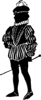

1928—The New-Way Course in Millinery and Hat Design
Lesson 8—Helpful Hints to be Learned Before Making a Hat & Terms Used in Millinery
Helpful Hints to Be Learned Before Making a Hat
There are a number of important details in millinery which are so necessary for you to know before you begin the making of hats that I have decided to write this lesson which will deal with these different points.
It is our earnest aim to make this course in Fashionable Millinery as complete as possible, and we wish to incorporate into it every detail, no matter how small, that may be of value to you. These details are taken up separately and we would suggest that you first read through the pages and gain a thorough impression of what they contain. Then read each item over carefully, mastering every detail, whatever it chances to be, so thoroughly that you will have no difficulty in recalling it at a moment's notice when the occasion arises.
How to Cut True Bias Bands
Many milliners experience difficulty in cutting correct bias bands. I am sure you will have no trouble whatever if you follow these directions.
To cut a true bias lay the material on the table lengthwise. Turn the selvage, that is, the warp of the material, back onto the material, even with the woof or cross thread. This selvage forms a right angle with the lengthwise selvage, and this fold or bias is called a true bias. In measuring the width of bias strips do not measure along the selvage or straight edge, but across bias at right angles to folded bias edge. Fold the material, pin it in place and cut.
If bias strips of different widths are desired mark the lines for the bias bands on the wrong side of your material, using a ruler and chalk. Use a hard pencil for light materials, and chalk for dark materials.
Methods of Making Folds
Flat Fold
In making this kind of a fold cut the material twice the width desired when finished. After this is accomplished, turn both edges over to the wrong side until they meet in the center. With the lacing stitch, which has been described, draw the edges together by placing the needle under material one-eighth of an inch from the edge and take stitches one-quarter inch apart. Draw the edges together, giving somewhat the effect of lacing a shoe with a string. See Fig. 1.
To Make Milliners' Fold
1. Cut the fold on a true bias, two and one—half times the width that the finished band is to be. Join if necessary, using the plain seam. All seams should be pressed flat.
2. Turn one edge to the wrong side, making this turn the width the band is to be.
3. Fold the other edge to cover this raw edge. If done correctly, this turn will be one-half the width that the finished fold is to be.
4. Catch-stitch this edge to one thickness of the material, being extremely careful that no stitches show on the right side of the fold.
5. If the material is liable to ravel the top edge may be turned under one-quarter inch and held in place by means of the slip stitch. Great care must be taken that it does not show through on the right side.
This fold is often used for finishing the base of the crown after the crown has been attached to the brim. In sewing either the flat fold or milliners' fold to the base of the crown, pin one end in position and then stretch it around the crown. Pin the two pieces of the fold together and sew. The joinings may be finished with a small tailored bow or with trimmings. A bias fold is sometimes used to finish the brim.
Cutting Crinoline
As we have already learned, it is necessary to cover the wire edge of frames with crinoline cut in bias strips. If you only need a little of this material it may be cut according to methods already given for cutting bias materials. However, if hats are being made on a large scale, a great deal of crinoline will be used. In order to do this, cut a bias corner from the material. Fold back four inches of material on the opposite corner of the same end. This will make it come on the bias. Turn it several times until the full length is folded. Fold and flatten the entire length of the material. Place pins to hold in place. You will notice that the selvage will wind in a bias slant around the fold. With a sharp pair of scissors cut one-inch strips from the bias edge. When the desired amount of binding has been cut, wind it in flat rolls. Be sure to stretch it before applying to the edge, a brim or crown.
Calculating Materials
There is probably no question oftener asked by students of Millinery than "How much material should I buy for my hat?" Of course, when hats are made in wholesale millinery houses there is plenty of material and the question as to the amount needed for a single hat need not be calculated. However, when a person is making just one hat for herself this is an entirely different matter.
After the frame is made, it is necessary to measure with a tape measure and decide the amount needed. Another method is to cut paper patterns and place these patterns on a strip of paper or material the width to be used and then measure the strip.
In case you are planning on covering a plain brim, measure the underside at the point of the greatest diameter. It is considered best to allow about 1 1/2 or 2 inches for making. If the brim is to be covered with the same material on upper and lower part, then it will take twice the width of the brim at the widest point. For instance, if the brim of a hat is 14 inches in diameter, it will take 16 inches of 18-inch wide velvet, for you see an allowance of 1 1/2 to 2 inches is made for making. If both the upper and lower part of the brim are covered with the same material two times 16 or 32 inches of 18-inch wide velvet would be purchased for covering the brim. On the other hand, one-half yard of 36-inch velvet would be plenty.
In estimating the material for crowns it is necessary to consider whether the crown is plain or draped. Of course, a crown made in one piece takes less material than other types. To estimate the material for a plain crown, measure from the base over the top to the base on the opposite side. For the average crown 1/2 yard of 18-inch material will be enough.
Some hats are made with the upper part and under facing in one piece. In this case a wide bias strip of the material may be used. It is possible to fold it through the center and stretch it over the brim, or the material may be held full at the edge and the fullness at the headsize gathered or plaited. A way of varying this covering would be to cut a bias strip for both the upper and lower part. This will require a little more material but makes many effective edge finishings possible.
If a hat is to have a shirred brim, measure the circumference of the brim and allow 1 1/4 to 1 1/2 times the circumference. This will be all that is needed for heavy materials as velvet, faille or duvetyne, but for thin material more must be allowed, depending on the amount of shirring desired.
It is possible to buy velvet cut on the bias. This makes it very convenient and less expensive than buying the material and cutting it yourself. Below is a table which will help to determine the amount of material necessary for a hat if the material is cut on the bias.
5 inches on the selvage of the bias—3 1 /2 inches through the material.
8 inches on the selvage of the bias—5 3/4 inches through the material.
10 inches on the selvage of the bias—7 inches through the material.
12 inches on the selvage of the bias—8 1/2 inches through the material.
16 inches on the selvage of the bias—11 1/4 inches through the material.
20 inches on the selvage of the bias—14 1/2 inches through the material.
24 inches on the selvage of the bias—17 inches through the material.
Padding Buckram Frames
Often the wires used to stay the buckram frame do not leave a smooth surface over which to stretch thin materials. The frame is padded with sheet wadding. Cut the material to exactly meet the edge of the brim. It is sewed with the stab stitch and is used only on the side where the stay wires are sewed. The padding turns up into the headsize, just as the hat material does, when applied.
Split Work
A millinery term which you will encounter in your experience as a fashionable hat-maker is "Split Work." It is a process used when making hats of folds.
You have probably often admired hats in which velvet, maline or chiffon was folded gracefully and attractively—and you may have wondered how the charming effect was achieved.
It's really quite a simple process, not much different from the sewing of braids. But it is an important process, and one that every milliner should be well acquainted with. The frame, which should be of buckram, must be padded when doing split work. The nap of the velvet or grain of the material should run in the correct direction, just as though plain covering was being applied.
1. The material should be cut on the bias, the bias strips being two and one-half inches wide. Join these strips with selvage to selvage, and crosswise edge to crosswise edge.
2. Now fold this bias fold lengthwise through the center. Baste in position. If you are using velvet, you must do this basting with silk thread, as cotton thread will leave a mark.
3. Bind the edge of the hat with a bias piece of the material to be used. Begin at the center back and pin the fold in position, bringing it around to the center front. This is not permanent work—it serves merely as a guide for the future work.
4. Beginning at the center front, stretch this bias towards the side. It must be so flat that it appears glued to the frame; but be sure that it is not stretched so much that it curls up.
5. Pin in place, being sure that the points of the pins run toward the headsize and are about one inch apart all around.
6. When you reach the center back, cut the material on the bias, turn on the bias, and fold over to form a line that runs in the same direction as the seams in the bias fold. One of the most important things to remember in split work is to have all seams come in the correct position. A seam in the center front indicates poor workmanship.
7. Using the even basting stitch, sew in position. Make the stitch three-quarters of an inch long on the side you are working and three-eighths inch on the other side. Start sewing at the center front and work towards the back at both sides of the hat. Do not attempt to work all around. Remove the pins as quickly as the work is completed.
8. To apply the second fold, proceed in the same manner. This second fold must be so placed that it hides the raw edge and the stitching of the first fold. If the brim is sharply curved, it may be necessary to catch the folded edge of the bias pieces to the frame. But on ordinary frames or flat frames this will not be necessary if the work is properly done. Neat workmanship is extremely important.
9. If you are applying braid or ribbon binding instead of folds of the material, the process is the same, except that the braid or ribbon is basted to the finished hat and then machine-stitched. Straw braid is similarly applied, the stitch being three-eighths and one-eighth inch long. Practice with scraps of material and with one of the frames you have made until you can do split work quickly, easily and attractively.
Economy in Millinery
The good milliner knows how to save time, and how to save money. She is jealous of every minute, and careful of every penny that is spent. She buys her materials judiciously and never wastes an inch of ribbon or material if she can avoid it.
It is a wise plan to have a piece-bag, into which you can put all your small, left-over pieces of material. You can never tell when even a two-inch piece of ribbon is going to be just what you need to finish a flower or a bow. There are countless ways of utilizing small bits of materials, and they should never be thrown away.
To save time, tag your piece-bag. With a large safety pin attach to the outside of the bag a tiny sample of all the remnants that go into your bag. Then, when you are looking for a piece of black satin, or red velvet, or pink taffeta, you won't have to search all through your bag. Just look at the samples on the outside of the bag, see if you can match the material you want, and if you can—then it is time enough to find it in the piece-bag. Of course, as soon as a remnant is used up, remove the sample from the safety pin.
There are many other ways of saving time and money in millinery, but we will take these up individually as we come to them.
Ripping Hats
Very often you will tire of a hat or find that for some reason it has become unbecoming. Rather than send it to the scrap heap you may want to use the materials to make another hat. It is important that you do not ruin the materials while ripping them apart.
Never pull threads, as this leaves holes in the material. Cut them with a pair of small scissors. The scissors should be very keen and the blades narrow. You may find, after ripping, that it is a tedious and difficult job to pick the threads from the seams. Dampen a piece of coarse cloth, such as toweling, rub it over the seams, and the threads will come out very easily.
Before ripping a covering made for a crown, decide upon the new hat you want and then see if the old crown is not satisfactory. Then, with a new brim, you will have an entirely new hat.
Materials should always be refreshed and very often cleaned before being used again. This subject is covered completely in a later lesson.
Making Use of Scraps
Being an expert milliner does not indicate, necessarily, that you must confine yourself solely to the making of hats. You will be a better milliner if you are economical—and you will be economical if you utilize all the scraps in your piece-bag.
There are many pretty, novel pin cushions that can be made of left-over bits of velvet and satin. Other pretty novelties can be made that are appropriate for holiday gifts—such as powder boxes, pillows, hand-bags, pin trays. If you have quite a large piece of left-over ribbon or satin, you can make a dainty electric light bulb cover, or a doll for the telephone.
More Useful Hints
1. When it becomes necessary to press loops or bows on a hat because they have been mussed, it is best to press them from the inside with a heated curling iron. In this way, it is unnecessary for the bows to be removed. This plan is especially recommended to those who travel or live at hotels. Indeed, the heated curling iron is a very useful article and will be found to serve the purpose of an iron many times.
2. Some beginners in millinery find difficulty in holding the hat while trimming it. To have your left hand free to hold ribbons, flowers or lining, pin the hat firmly to your skirt at the knee with a hat pin. This will obviate the necessity of holding the hat.
3. When you find that your straw hat, or hat made of straw braid, has become stiff and brittle and inclined to break in spots, you can know that it needs a good steaming. This will make the straw soft again and you will be able to manipulate it in any way you please.
4. If you find that a feather or two has dropped from your black feather ornament, drop a few drops of black ink into your jar of library paste and paste them back again. If you used the paste without the ink, it would show. But if you do not wish to blacken your entire jar of paste, simply pour a little into a saucer and drop the ink into it then.
5. If your scissors become dull, you can sharpen them by opening and closing them quickly on a glass or piece of glass, as though you were trying to cut it.
6. Neat milliners have small pegs in the bottom of their sewing machine drawers on which to place their spools of thread. This keeps the threads from becoming tangled, and incidentally keeps the drawers neat and tidy. And, after all, nothing is more an indication of good workmanship than tidiness.
7. All buckram and stiff materials that are used in making frames should be handled with the balls or tips of the fingers. This prevents breaking and making sharp lines in the material. Wires should also be handled this way.
8. The nap of velvet should always run from front to back on all hats.
9. If wire for frames must be pieced, use milliners' clamps. These can be purchased at a milliners' supply house. They make a smooth, fine joining.
10. Plain coverings for hats should be so flat that they appear to be glued. This effect cannot be achieved if the material is stretched. It must simply be made as smooth as possible without stretching too much.
11. All stitches in millinery begin at the center of the front. The material is pinned on the hat and finished at the center of the back. But when sewed, one side must be completed first, then the other.
12. In attaching linings, the seam in the lining should always be at the center back.
13. Never leave selvages on the materials used in millinery.
14. Always make paper patterns of hats to be cut from buckram. These paper patterns are useful in cutting the material for covering the frames.
15. If buckram frames are broken, shellac the broken places to restore shape and line.
16. When cutting sheer materials, such as chiffon or georgette, it is wise to draw a thread through as a guide line.
Terms Used in Millinery
I am giving you a list of words with their definitions which I am sure will come in handy. Perhaps you will find a word you are not just sure of; in this case turn to this lesson and clear up the difficulty.
AIGRETTE—A beautiful spray of feathers taken from the great Egret, a bird of the heron family. In many states it is illegal to offer these plumes for sale. Various imitations are made and are used extensively in millinery.
AJOUR—Open work effect.
APPLIQUE—A form of flat trimming made by applying patches of contrasting material with decorative stitches.
ARMURE—A weave producing a fine pebble surface. Armure silk in black is used a great deal in mourning wear.
ARRAS—A strong, white bobbin lace.
BADEN HEMP—A superior grade of hemp, used for hats.
BANDEAU—A narrow band or a shaped band made of buckram and wire to adjust a hat to a particular headsize or angle.
BARRE—Striped.
BAKST DESIGNS—Crude forms in strong colors. Named after the originator, Leon Bakst.
BASKET WEAVE—A weave in which two or more of the warp threads pass over and then under two or more of the woof or filling threads.
BAST—The fiber between the outer bark and the wood of a plant or tree. For instance, linen is the bast fiber of the flax.
BATAVIA CLOTH—A straw cloth woven either with silk and cotton warp and often in lacy design. Used to drape hats.
BANGKOK—A hat woven of wood. These hats are extremely light weight.
BAYADERE—A name given to stripes running from selvage to selvage; the stripes are usually in alternating colors.
BEAVER—A light brown fur obtained from the beaver.
BEAVER CLOTH—A cloth resembling beaver fur. This may sometimes be purchased cut in circles just large enough for a hat.
BEIGE—Natural tan color.
BENGALINE—A heavy silk woven with cords running from selvage to selvage. The cords are of wool and cotton, the silk being woven to conceal these cords entirely. This silk is very attractive in black and dark shades.
BENGALINE DE SOIE—A corded weave resembling poplin. Much lighter weight than ordinary bengaline.
BERET—A flat cap. Used as crown for wide brim hats.
BOBBINET—A cotton net, the mesh being six-sided. Has no pattern woven in it.
BOURBON—Machine-made lace with scroll-like pattern.
BRACE WIRE—A heavy silk or cotton-covered wire used for making hat frames. Comes in many colors. Purchased in coils. Also a wire placed parallel to the headsize.
BROCADE—A silk fabric with a raised satin figure, often having gold or silver threads woven in the pattern.
BROCHE—A fabric woven in figures to imitate embroidery.
BUCKRAM—A coarse glue-sized material, usually made of one thickness of square mesh material to which is pasted a finer material. Sometimes a third or even fourth layer of material is pasted to this, but for general purposes the two-ply buckram is used. The four-ply is used for forms over which wire frames may be made.
BUCKRAMETTE—Light-weight buckram.
CABOCHON—An ornament used for hat trimming.
CABLE WIRE—This is exactly the same in construction as edge wire except that it is more heavily padded. It is used where corded effects are desired. It is purchased in coils. Usually silk covered.
CHIFFON—A soft, transparent silk material of plain weave, used for making and trimming hats. Used also for veils.
CHIFFON TAFFETA—A light-weight, soft-finished taffeta silk. Chiffon used before the name of any cloth means light-weight and soft.
CHAPEAU—The French term for "hat."
CHENILLE—A cotton, wool or silk thread having a pile which looks like velvet and which is always at right angles to the central thread.
CHIC—French term for smart, good style.
COMMERCIAL—Made in a factory.
COQUE—Cock feathers—the long lustrous tail feathers of the rooster.
CREPE—A cloth having small grain effect and slightly crinkled surface. In silk and cotton.
CREPE DE CHINE—A fabric with crepe surface; made of raw silk.
CRINOLINE—Crinoline is a thin, open mesh material, sized. When cut on the bias, it is very useful for binding buckram frames. It is also useful for covering wire frames when the braid is heavy enough to hide it.
DESSOUS—Below the underbrim. Sometimes means the foundation.
DOUBLE FACED—Ribbon or fabric with both surfaces finished. Has no wrong side.
DRESDEN—A small flower design, imitating the patterns used on Dresden china.
EDGE WIRE—A thickly padded silk or cotton-covered wire used on the outer and inner edges of brims. Purchased in coils.
EGRET—See Aigrette.
EPONGE—A fabric having a rough surface something similar to terry cloth.
FACING—A finish for the underside of brim.
FAILLE—A soft ribbed fabric of dull finish. Makes excellent mourning wear.
FLANGE—A rim that projects.
GAUZE—Gauze is a French word meaning gaze. In millinery it is used to denote a thin, transparent veiling or voile.
GROS GRAIN—A ribbed silk ribbon or fabric, used for trimming-
GUSSET—A piece of material inserted to produce a flare.
HABUTAI—A soft washable silk.
HEADSIZE—The part of the hat that fits close to the head.
IRIDESCENT—Rainbow effect; prismatic hues.
JACQUARD—A design produced in weaving complicated figures into the fabric.
JET A variety of mineral coal, which is polished and used for ornaments.
LACE WIRE—A silk-covered wire a little heavier than tie wire. The heavier size is sometimes used in the making of frames. The real use is to stiffen lace, maline or any light-weight transparent material. Purchased in coils.
LAME—Interwoven or outlined with metallic threads.
LEGHORN—A hat woven in one piece of straw from a variety of wheat. The real leghorn hat is imported from Italy.
LIBERTY SATIN—A fine lustrous satin ribbon.
LIGNE—A unit of French measurement. In the manufacture of ribbons this is the unit of measurement of the width.
LISSE—Gauze-like chiffon.
LOUSINE—A ribbon of very fine basket weave.
LYONS VELVET—A fine grade of velvet, usually all silk. Originally manufactured in Lyons, France.
MALINE—Very fine silk net of gauze-like texture.
MARABOU—Soft, downy feathers.
MATELASSE—A weave showing a very small, dainty quilted effect. The word is derived from the French word matelas, meaning quilt.
MIRROR VELVET—Is produced by pressing the nap of velvet flat. The pressing must be done in one direction only. Usually this is done with steam and a roller, but at home a hot iron may be used.
MOIRE—A finish that gives to silk an attractive, watered effect.
MOIRE ANTIQUE—A fabric watered in antique effect.
MOIRE METALLIQUE—A watered effect on metallic finish.
ECRU—Almost the color of unbleached linen.
MOTIFS—That part of a design that is repeated over and over again.
NOUVEAU—The French term meaning novelty, or new.
OMBRE—A shaded effect produced by the arrangement of the warp.
OTTOMAN—A corded silk-like faille, but much coarser. Used for elderly women.
PANACHI—Plumed; trimmed with plumes.
PANNE—A high luster material.
PANNE VELVET—This velvet has a longer pile than ordinary velvet, pressed flat, producing a lustrous finish.
PASSE—Out of date.
PEAU DE PECHE—Having the texture of peach skin. The literal meaning is "Peach Skin."
PEAU DE SOURIS—Mouse skin. A silk with a soft finish similar to duvetyne.
PEKINE—Fabrics in which the stripes run in the direction of the warp.
PERSIAN EFFECTS—Having the pattern of a cashmere shawl.
PICOT—An edge finished with small loops (or its imitation, which is made by cutting a line of machine hemstitching exactly in the center, leaving each edge finished with small points.) The word PICOT is a French word meaning SPLINTER.
POINTILLE—Dotted.
POMPADOUR—Large floral design in soft colors.
PUSSY WILLOW TAFFETA—A soft, firm silk of taffeta weave but without stiffness.
RADIA—Having a high luster or sheen.
RADIUM—Brilliant finish applied to silks and braids.
RAJAH—Made of raw silk.
RAYE—Striped.
RAYON—Manufactured or artificial silk. Made of wood pulp, sometimes called fiber silk.
RENAISSANCE LACE—Lace made of fine braid fastened together with flat stitches woven into fancy designs.
ROMAN STRIPE—A series of stripes of varying widths and in contrasting colors.
RIBBON WIRE—Two or more parallel wires placed between the fold of a thin tape and held in place either by stitching or gluing. Comes in different widths and is used for stiffening ribbon loops and bows. Purchased in coils.
SATIN—A silk or silk-and-cotton material of the satin weave. The surface threads are in satin and are woven together closely in such a way that a smooth, shiny surface is produced. Many ribbons are of this material, some woven with one side plain weave, others having both of satin finish. These ribbons on which both surfaces are of satin are called double-faced. Ribbons of fine quality are to be had in the double-faced variety, having the two sides of contrasting colors. Satins for garments are sometimes woven in this way.
SCRATCH FELT—A cheap grade of wool in which long yarns or fibers are woven to produce a camel's-hair effect.
SCINTILLANTE—A changeable effect.
SILK BRAID—Braid made especially for the millinery trade. Silk braids are of silk, chenille combined with wool or velvet, or a combination of all. They are used for making entire hats. Sometimes they are combined with other braids.
SIZE—To coat with a gelatinous solution. As an example, buckram is coated with a solution of this kind to stiffen and hold it together. Flowers are coated with a light solution to enable them to hold their shape. This process is called sizing.
SHADOW LACE—Lace in which the pattern is light instead of heavily outlined. The design has a shadowy appearance.
SHAPE—An untrimmed hat.
SPRING WIRE—An elastic steel wire used for the edge of very large hats where no brace wires are used. Also used on the edge of flat buckram shapes. Does not bend easily.
SPORT HAT—A plain, simple hat suitable for outdoor and business wear.
SPUMED—Acid dipped. Ostrich feathers are treated in this way, part of the flues being removed. This makes the feather appear lighter. The word spume means foamy.
STRAW BANDS—These bands are made for millinery purposes. They may be made entirely of straw or may be straw and net. Usually they are woven in one-yard lengths, in various widths.
STRAW BRAIDS—Braids made of straw, most of which are imported. The cheaper braids come from China and Japan, the better ones from Italy. The braids coming from China are very brittle and are easily broken.
SURAH—A light, soft silk with a twilled surface.
TAFFETA—A fine smooth silk or ribbon, alike on both sides.
TAFFETA CHAMELEON—A three-tone changeable effect.
TAFFETA METALLIQUE—A taffeta finished in metallic effect.
TAUPE—The color of a mole. Grey with a brown tone.
TERRY VELVET—Among milliners and dressmakers this velvet is called uncut velvet. The surface is formed of loops like the loops on terry cloth or bath toweling. Often these loops are woven in a satin surface of contrasting color, making a beautiful cloth or ribbon. Beautiful for trimming purposes.
TIE WIRE;—A soft iron wire covered with silk, and wound on wooden spools, used for tying wires together in frame making; also used in flower work.
TIP—Top section of crown to which side band is applied.
TOOLING—Pressing the material with the point of the needle to form a cord around the wire.
TROTTEAU HAT—Originally this meant a walking hat; today it means the hat worn with costume worn for shopping or any tailored costume.
TULLE—A fine silk net, sometimes known as illusion or maline.
TUSSAH—The wild silk fiber from which shantung and pongee silks are made. This silk fiber cannot be burnished. The heavy grades of silk woven from this are called Tussah.
VELOURS—A long napped fur felt of soft, lustrous texture. This felt is made in cone shapes of different sizes and later pressed or blocked in shape for a hat.
VELVET—A fabric of silk or cotton back with short, thick pile. Originally the word velvet was applied only to all silk material. Today it may mean silk, silk and linen, silk and cotton.
VELVETEEN—A fabric woven entirely of cotton with short pile. Being of cotton, velveteen is heavy and not well suited for making of hats.
VOGUE—The prevailing style.
VOILES—This is the sheerest of gauze fabrics. It is woven from hard-twisted threads.
VOILETTE—A small veil.
WARP—The thread running lengthwise or with the selvage.
WARP PRINTS—Fabrics in which the designs are printed on the warp before weaving, producing a soft toned effect.
WEIGHTING—The application of foreign substance, usually a metal such as tin or zinc, to silks to give added weight. Some thin silks are weighted with sugar.
WOOF OR FILLING—The thread running from selvage to selvage or across the cloth.
This completes one of the most important lessons of your Millinery Course. It is so necessary to get a good firm foundation before attempting to make a hat, as well as a thorough understanding of the various methods used. It is for this very reason that I thought it best to give you this lesson before you took up the different ways of covering crowns and brims.
LESSON 8
QUESTIONS
1. Explain how to join bias pieces.
2. Where is the milliners' band used?
3. Give one use of crinoline.
4. In calculating the material to cover a plain brim, where" would you measure?
5. In estimating the material for the crown, what must be considered?
6. If you want a piece of bias velvet 7 inches wide, how much should be measured along the selvage?
7. If scissors become dull how can they be sharpened?
8. How may loops of ribbon be pressed?
9. How may stiff and brittle straw be softened?
10. In attaching linings where should the seam always be?